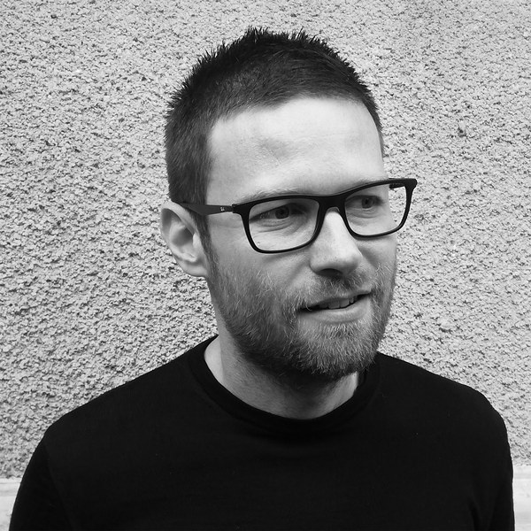
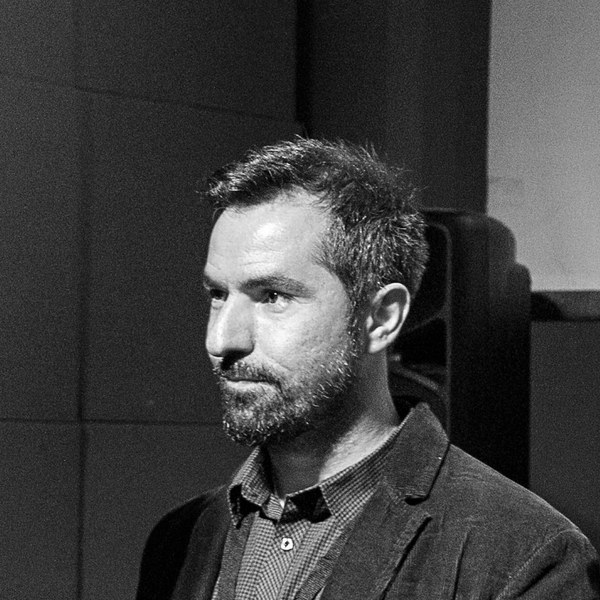

Platformă de construcție colaborativă
Cauți un apartament în zona bună, la preț corect
Câteva familii din București s-au oprit din căutat și au construit propriul bloc, susținute de experți la fiecare pas. Și tu poți avea apartamentul dorit, fără dezvoltator.
Pune întrebări fondatorilor · Zoom · Gratuit
Spațiul tău, .
Terenuri filtrate de arhitecți și grupuri care se formează chiar acum, în zonele care te interesează.
Cont agenție
Terenurile tale.
Propunerile tale de teren, într-un singur loc. Urmărești statusul fiecăreia și adaugi unele noi.
Platformă de construcție colaborativă
Cum a devenit posibil să construiești un apartament.
În Germania și Europa de Vest, mii de familii construiesc deja așa: se asociază, aleg împreună un teren, proiectează un bloc pentru nevoile lor reale și îl finalizează fără intermediar. Cu vecini pe care îi cunoști din prima zi.
Apartamentual e platforma care îți facilitează traseul spre un apartament construit cum ai nevoie, la costul real al construcției, fără intermediar.
Cum facem asta?
- Analizăm terenurile cu arhitecți înainte să le listăm
- Facem matching în funcție de zonă și preferințe de locuire
- Coordonăm tot procesul tehnic și legislativ
- Tu decizi ce construiești
Procesul
Cum începi
Pornești de la un teren sau de la o zonă. Ambele duc într-un grup.
Pornești de la un teren
- Cauți terenuri în zonele tale și le adaugi la profil
- Vezi cine mai e interesat de ele, oameni sau grupuri
- Te alături grupului sau faci unul cu cei interesați
Pornești de la o zonă
- Creezi un grup pe zona ta, de exemplu „Grup Bucureștii Noi”
- Adaugi terenurile care îți plac
- Ceilalți le văd și se alătură
Din grup, drumul continuă până la recepție: căutarea și achiziția terenului, proiectarea, construcția. Vezi tot drumul →
Timelapse: construcția blocului de pe Strada Județului, 2024
„După lungi căutări prin ofertele imobiliare clasice, am știut din prima că apartamenTUal e ce căutam de fapt. Ne-a plăcut mult libertatea de a alege zona, posibilitatea de a ne croi interiorul exact după nevoile noastre, de a decide ce fel de spații comune includem și de a fi implicați în toate fazele, fără intermediari. Au fost și provocări, dar e mai ușor când împarți responsabilitățile cu ceilalți. Abia așteptăm să ne bucurăm de noua noastră casă, alături de viitorii vecini.”
De ce funcționează
Ce câștigi când construiești colaborativ?
Fără marja dezvoltatorului
Toți banii tăi rămân în apartamentul tău. Niciun cost ascuns: fiecare buget e văzut și aprobat de grup, de la teren până la finalizarea blocului.
Tu decizi ce construiești
Zona, suprafața, configurația, finisajele. Nu primești un plan standardizat, construiești ce ai nevoie de la zero.
Vecini pe care îi alegi
Cunoști oamenii cu care construiești înainte să semnezi ceva. Grupul se formează în jurul unor valori comune, nu pe criteriul că v-ați nimerit în același bloc.
Nu îți vine să crezi că se poate face asta și în România?
Blocul de pe Strada Județului există. Familiile care l-au construit au decis totul împreună, pe parcurs. În prima joi a fiecărei luni ne întâlnim online și povestim cu voi cum s-a întâmplat, ca tu să poți întreba tot ce vrei și să îți cunoști, poate, viitorii vecini.
Următoarea întâlnire
Joi · 3 septembrie 2026
11:30 · Zoom
Format
1 oră + întrebări
Preț
Gratuit, fără angajament
Județului Housing · București 2024
Primul bloc construit colaborativ prin platforma apartamenTUal.
Județului Housing · randări și etape de șantier
Vezi cum s-a construit, de la teren la recepție →Newsletter
Serialul Județului Housing: povestea reală, pe episoade
Cum am construit primul mic bloc colaborativ din România: avizele, vecinii, banii, șantierul. Abonează-te și primești fiecare episod nou, plus terenuri noi. Fără spam, te dezabonezi oricând.
Începe cu episodul 0Echipa
Cine sunt oamenii din spatele apartamenTUal


Arhitecți cu aproape 20 de ani de experiență în București, fondatorii LTFB Studio. Au proiectat școli, birouri și locuințe, mereu cu același unghi: spații identitare care creează comunitate.
Prin ApartamenTUal își doresc să creeze un hub al construcțiilor colaborative și să mute centrul de greutate al locuirii spre cei care chiar vor locui în acele spații.
Blocul de pe Strada Județului e primul lor proiect de acest fel, primul din România.
Citește povestea noastră →
Fondatorul explică
Ce este, concret, apartamenTUal
Arhitectul Lucian Luta explică modelul de construcție colaborativă.
- Toți banii tăi merg în apartament, fără marja dezvoltatorului
- Alegi finisajele, configurația și fiecare detaliu al locuinței
- Cunoști vecinii înainte să existe blocul
- Platforma te ajută să formezi grupul, să găsești terenul și să coordonezi construcția
Resurse
News
Articole și resurse despre Baugruppen din întreaga lume.
Nu rata următoarea întâlnire.
Vii, asculți, întrebi. Fără angajament, fără cont, fără nimic de pregătit.
Întrebări